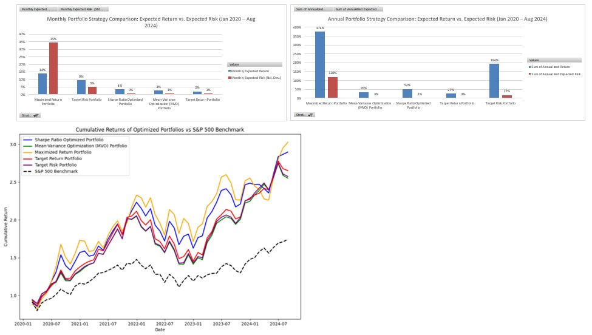

About Me
With over three years of experience as a Data Analyst, I specialize in financial modeling, risk analysis, and data-driven decision-making, particularly in asset pricing and operational efficiency. My advanced skills in SQL, Python, and Alteryx, combined with a solid foundation in economics and specialized training in FinTech, allow me to automate processes, resolve data discrepancies, and transform data into actionable insights. I create KPI reports and predictive models using Power BI to guide strategic decisions. Currently pursuing a degree in Computer Science with a focus on AI and data science.
Skills
- Programming: Python, SQL, Alteryx
- Data Visualization: Power BI, Tableau
- Financial Modeling
- Risk Management
- Machine Learning
Education
 Florida International University – Bachelor's degree in Economics (March 2017 - March 2021)
Florida International University – Bachelor's degree in Economics (March 2017 - March 2021)
 Columbia University School of Engineering – Financial Technologies Certificate (March 2022 - October 2022)
Columbia University School of Engineering – Financial Technologies Certificate (March 2022 - October 2022)
 Nova Southeastern University – Master's degree in Computer Science (Concentration: Artificial Intelligence) (August 2023 – December 2024)
Nova Southeastern University – Master's degree in Computer Science (Concentration: Artificial Intelligence) (August 2023 – December 2024)
Projects
- Project 1: Economic Indicator Dashboard – A comprehensive dashboard analyzing key economic indicators for investment strategies. Project 2: Portfolio Optimization – This project involves the implementation and analysis of various portfolio optimization strategies to maximize returns and manage risk. The strategies employed in this project include: Mean-Variance Optimization (MVO): A strategy that minimizes the portfolio variance for a given expected return, based on the modern portfolio theory. Sharpe Ratio Optimization: A strategy aimed at maximizing the Sharpe Ratio, which balances return and risk to achieve the highest risk-adjusted returns. Maximized Return Portfolio: A strategy that aims to maximize the expected return of the portfolio without considering risk. Target Return Portfolio: A strategy that minimizes risk while achieving a specific target return. Target Risk Portfolio: A strategy that maximizes return while adhering to a specified risk level. The project utilizes Python scripts for data retrieval, optimization, and visualization, with all computations based on historical stock data. Detailed descriptions and the distribution of stocks for each strategy are provided in the analysis. 
- Project 3: Data Discrepancy Automation – Developed an Alteryx workflow to automate the identification and resolution of data discrepancies in financial databases.
Career Objectives
- Quant Research/Analyst/Trading
- Portfolio Analyst/Asset Management
- Quant Risk/Credit Risk
Hobbies
- NCAA swimmer
- Represented my country in international championships in swimming
- Playing the acoustic guitar (Fender) and electric guitar (PRS)